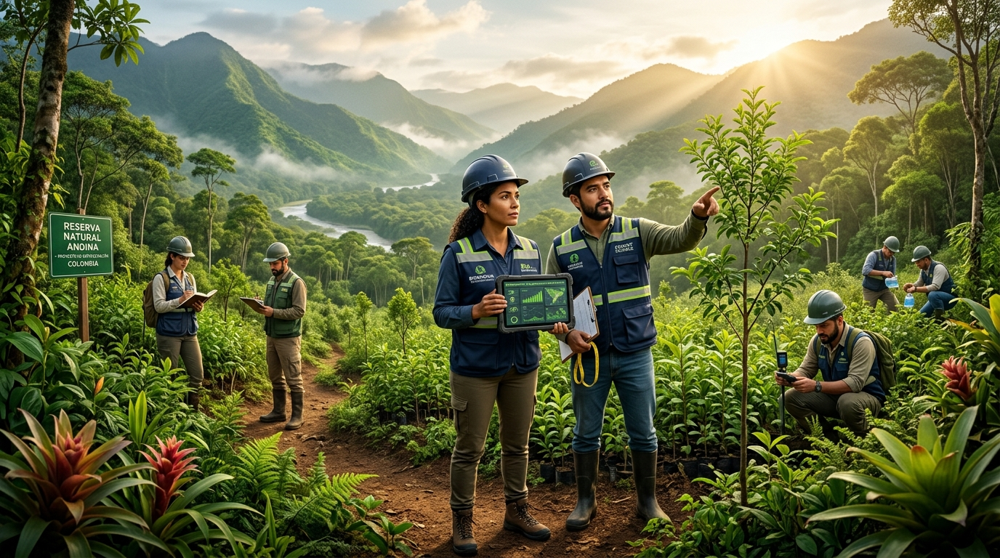

Liderando la conservación y el desarrollo sostenible en Colombia desde 2012
Constituida e inscrita formalmente ante la Cámara de Comercio de Cali el 30 de diciembre de 2012, Terrasan nació como una iniciativa pionera orientada a dar respuesta a los crecientes desafíos del cambio climático y la degradación de ecosistemas en el suroccidente colombiano.
A lo largo de más de 12 años de trayectoria continua, nos hemos consolidado como un aliado estratégico para industrias, entidades territoriales y comunidades, demostrando que la productividad económica y el respeto absoluto por el medio ambiente no solo son compatibles, sino mutuamente potenciadores.

El propósito que orienta cada siembra, cada proyecto y cada solución ecológica que ejecutamos.
Proteger, regenerar y conservar el patrimonio natural mediante servicios ambientales de excelencia técnica, promoviendo la economía circular, la reforestación nativa y la mitigación del cambio climático para forjar un entorno armónico entre sociedad y naturaleza.
Ser reconocidos hacia 2030 como el referente colombiano en bio-restauración de cuencas, gestión ecológica integral y carbono-neutralidad, liderando alianzas de impacto medible entre el sector privado y las comunidades locales.
Integridad Ambiental: Fidelidad a la ciencia ecológica.
Responsabilidad Legal: Cumplimiento estricto de las regulaciones nacionales.
Impacto Comunitario: Desarrollo humano con dignidad.
Innovación Sostenible: Aplicación de tecnologías verdes.
Terrasan enmarca sus intervenciones en las metas universales suscritas ante las Naciones Unidas.
Protección activa de manantiales y cuencas abastecedoras en el Valle del Cauca.
Impulso a fuentes renovables y eficiencia en procesos productivos.
Compensación forestal y captura certificada de toneladas de CO₂.
Restauración de bosques andinos y preservación de especies endémicas.